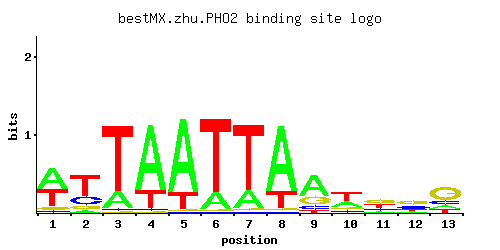

PHO2
YDL106C, phoB, GRF10, BAS2
Homeobox transcription factor; regulatory targets include genes involved in phosphate metabolism; binds cooperatively with Pho4p to the PHO5 promoter; phosphorylation of Pho2p facilitates interaction with Pho4p
Best-performing DNA-binding model.

View and copy the recommended matrices ↘
A | 0.50 0.06 0.20 0.77 0.80 0.18 0.20 0.78 0.58 0.30 0.14 0.15 0.14 C | 0.04 0.22 0.02 0.02 0.01 0.01 0.01 0.01 0.13 0.11 0.18 0.32 0.18 G | 0.07 0.13 0.01 0.01 0.01 0.01 0.02 0.02 0.22 0.13 0.43 0.38 0.55 T | 0.39 0.58 0.78 0.20 0.18 0.80 0.77 0.20 0.06 0.46 0.25 0.15 0.13
A | 50 6 20 77 80 18 20 78 57 30 14 15 14 C | 4 22 2 2 1 1 1 1 13 11 18 32 18 G | 7 13 1 1 1 1 2 2 22 13 43 38 55 T | 39 57 78 20 18 80 77 20 6 46 25 15 13
A | 0.45 -1.67 -0.47 0.88 0.92 -0.58 -0.47 0.89 0.59 -0.06 -0.83 -0.76 -0.83 C | -1.50 0.20 -2.20 -2.20 -2.89 -2.89 -2.89 -2.89 -0.33 -0.49 0.00 0.58 0.00 G | -0.94 -0.33 -2.89 -2.89 -2.89 -2.89 -2.20 -2.20 0.20 -0.33 0.87 0.75 1.12 T | 0.20 0.59 0.89 -0.47 -0.58 0.92 0.88 -0.47 -1.67 0.36 -0.25 -0.76 -0.90
Alternative candidate matrices 12
Historical matrix candidates from the original ScerTF database. Expand a source to inspect its original logo, scores, and matrix values.
PHO2Badis et. al.P = 0.02895View matrix ↘
PHO2_AFoat et. al.P = 0.002472View matrix ↘
PHO2_BFoat et. al.P = 1View matrix ↘
PHO2_CFoat et. al.P = 1View matrix ↘
PHO2_DFoat et. al.P = 0.006352View matrix ↘
PHO2_EFoat et. al.P = 1View matrix ↘
PHO2Harbison et. al.P = 1.94e-10View matrix ↘
PHO2Macisaac et. alP = 0.01913View matrix ↘
PHO2Morozov et. al.P = 1.61e-06View matrix ↘
PHO2Pachkov et alP = 0.1308View matrix ↘
PHO2Zhu J and MQ ZhangP = 1View matrix ↘
PHO2Zhao and StormoP = 0.00913View matrix ↘
Gene-level annotations and interactions.
Genes bound in ChIP-chip experiments 141 genes
YBL004W, YBL048W, YBL049W, YBR044C, YBR081C, YBR085C-A, YBR161W, YBR190W, YBR191W, YBR238C, YCL030C, YCR024C-A, YCR026C, YDL017W, YDL018C, YDL032W, YDL035C, YDL056W, YDL058W, YDL059C, YDL189W, YDL190C, YDL215C, YDL225W, YDL226C, YDR023W, YDR050C, YDR109C, YDR110W, YDR116C, YDR223W, YDR224C, YDR225W, YDR227W, YDR278C, YDR306C, YDR307W, YDR308C, YDR507C, YDR509W, YEL001C, YEL027W, YEL032W, YER099C, YER100W, YFR013W, YGL187C, YGR033C, YGR034W, YGR106C, YGR151C, YGR152C, YGR153W, YGR189C, YGR190C, YGR192C, YGR202C, YGR203W, YGR205W, YGR229C, YGR230W, YHR210C, YHR211W, YHR212C, YHR214W, YHR214W-A, YIL016W, YIL076W, YIL077C, YIL123W, YIL147C, YIL148W, YIL149C, YIL166C, YJL022W, YJL039C, YJL099W, YJL104W, YJL161W, YJL191W, YJL192C, YJR123W, YKL006C-A, YKL006W, YKL038W, YKL049C, YKL060C, YKL081W, YKL082C, YKL106W, YKL150W, YKL151C, YLL043W, YLL045C, YLR029C, YLR030W, YLR055C, YLR056W, YLR152C, YLR232W, YLR300W, YLR390W-A, YLR431C, YLR432W, YLR433C, YLR434C, YML075C, YMR005W, YMR055C, YMR111C, YMR170C, YMR176W, YNL024C, YNL027W, YNL029C, YNL043C, YNL057W, YNL059C, YNL080C, YNL132W, YNL233W, YNL238W, YNR028W, YOL036W, YOL056W, YOL148C, YOR042W, YOR062C, YOR063W, YOR133W, YOR213C, YOR311C, YOR337W, YPL130W, YPR002C-A, YPR011C, YPR012W, YPR072W, YPR073C, YPR149W, YPR194C
Genes affected by TF deletion 350 genes
YGL234W, YIL116W, YJR016C, YLR278C, YLR250W, YMR012W, YNL016W, YOR193W, YPL241C, YBR187W, YDL100C, YDL131W, YDR222W, YJL117W, YLR058C, YLR092W, YMR220W, YOR071C, YOR377W, YPL017C, YPL019C, YDR399W, YLR243W, YMR011W, YNL051W, YOL011W, YNR062C, YOR192C, YOR222W, YPL177C, YPL208W, YPL240C, YPL210C, YMR198W, YGR153W, YLR057W, YLR059C, YLR460C, YNL210W, YOR066W, YOR038C, YPL016W, YPL018W, YPL052W, YHR053C, YHR055C, YLL034C, YNL175C, YOL077C, YOR321W, YPL266W, YPR048W, YOR359W, YPL283C, YDL226C, YER055C, YGL105W, YGR250C, YJL145W, YLR156W, YML027W, YNL333W, YNR028W, YHR183W, YBR093C, YJL017W, YLL063C, YLR341W, YMR070W, YMR100W, YMR131C, YMR104C, YMR135C, YNL174W, YNL116W, YOL076W, YBL024W, YBL058W, YBR288C, YDR281C, YER056C, YGR211W, YGR213C, YLR119W, YLR121C, YLR123C, YLR155C, YLR157C, YNL332W, YBR012C, YCR050C, YLR282C, YLR254C, YML123C, YOL052C-A, YNR071C, YOR197W, YAR015W, YKL051W, YLR064W, YLR066W, YLR036C, YLR038C, YLR439W, YMR173W, YNL247W, YOR043W, YBL091C, YBR041W, YCL064C, YJR025C, YKR048C, YKR080W, YKR084C, YLR251W, YLR281C, YLR227C, YNL059C, YOR198C, YOR264W, YJR148W, YAL043C-A, YJL124C, YLR438W, YLR411W, YNL220W, YOR074C, YOR046C, YDR533C, YOL144W, YOL150C, YOR323C, YOR355W, YBR265W, YCL030C, YHR215W, YLR158C, YLR160C, YLR194C, YML093W, YNL309W, YNR033W, YNR035C, YPL088W, YPL122C, YPL092W, YFL014W, YDL040C, YFL048C, YHR064C, YIR035C, YKL021C, YJR156C, YLR343W, YMR142C, YMR144W, YNL182C, YOL143C, YOR356W, YAR071W, YBR296C, YDL229W, YDR346C, YER064C, YGL148W, YLR159W, YLR161W, YML035C, YMR290W-A, YMR319C, YNL312W, YNR038W, YPL091W, YER060W, YKR061W, YLR295C, YML131W, YOL027C, YDL112W, YDL084W, YGR138C, YKL127W, YLR040C, YLR104W, YLR110C, YML010C-B, YLR420W, YBR088C, YER156C, YGL245W, YML126C, YML130C, YNL064C, YNL096C, YNL035C, YNL098C, YOL057W, YOL059W, YOR240W, YPL226W, YAR018C, YEL059C-A, YFR051C, YGR139W, YHR133C, YHR163W, YKL120W, YLR041W, YLR043C, YLR446W, YML010W, YMR173W-A, YMR235C, YMR241W, YNL256W, YNL290W, YPL030W, YPL032C, YPL063W, YDL021W, YFL059W, YGR019W, YGR079W, YJL038C, YKL030W, YLR356W, YLR390W, YMR120C, YMR091C, YOL156W, YOL126C, YDL178W, YDR292C, YDR353W, YDR294C, YER072W, YGL087C, YGR260W, YJL167W, YLR142W, YLR204W, YML072C, YMR300C, YPL158C, YBR143C, YDL014W, YDR143C, YDR481C, YFL056C, YGR078C, YJR131W, YLL049W, YLR387C, YMR146C, YMR086W, YMR119W-A, YNL126W, YNL158W, YNL160W, YOL089C, YOL119C, YBR266C, YCL031C, YER044C, YGR261C, YKL216W, YMR301C, YPL163C, YBR054W, YIL170W, YLR297W, YLR299W, YLR270W, YLR242C, YNL046W, YAR053W, YHR136C, YLR080W, YLR050C, YLR054C, YLR118C, YLR453C, YMR182C, YMR214W, YMR186W, YOR091W, YCR005C, YFL004W, YHL003C, YHL033C, YLR237W, YLR267W, YLR300W, YMR005W, YNL108C, YOL036W, YOL038W, YOL069W, YPL198W, YDL117W, YEL037C, YGL032C, YHR135C, YHR201C, YLR047C, YLR049C, YLR456W, YMR181C, YMR215W, YNL264C, YOR090C, YDL029W, YFR028C, YHR076W, YJL012C, YLR332W, YLR364W, YMR093W, YOL134C, YOR339C, YOR309C, YDL182W, YGR204W, YGR208W, YIL074C, YLR174W, YLR146C, YLR178C, YBR089W, YCR102C, YGR086C, YLL019C, YLR359W, YLR390W-A, YLR395C, YNL134C, YOL097C, YOL163W, YOL165C, YOR338W, YOR372C, YER073W, YKR001C, YLR173W, YLR145W, YLR147C, YLR149C, YLR179C, YOR184W, YER061C
Genes supported by both experiments 9 genes
YCL030C, YDL226C, YGR153W, YLR300W, YLR390W-A, YMR005W, YNL059C, YNR028W, YOL036W